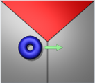

The game of Coercion is a two-player game, where a red and a blue player each try to claim as much playing field territory as they can. Each player controls three moving pieces called pushers. Using these pushers to strategically position markers of various colors around the field, players can acquire territory by coercing it to switch to their own color. Each player's score reflects how much territory they have acquired, and the winner is the one with the most at the end of the match.
A match of Coercion proceeds through a series of 900 turns. At the start of each turn, both players are given a description of the current state of the game. For each turn, the player directs how their three pushers should change movement direction. Based on the player's move, the game updates the movement directions for the pushers and then simulates one turn of movement for all pushers and markers. At the end of the turn, the colors of markers and field regions may change, depending on how the markers are positioned and how long they have been in those locations.
The game is played on a field of convex polygon regions. Regions are planar, with their vertices at various heights, and any region can change color between red, blue and grey. The goal of a player is to convert regions of the largest total area to the player's color.
The playing field uses a three-dimensional coordinate system, with X = 0 at the left edge and X = 100 at the right edge. The Y values range from 0 at the front edge to 100 at the back edge. The positive Z axis points up. The 100 × 100 field is entirely covered by planar, convex polygon regions. The vertices at the corners of the regions always have integer coordinates.
Most aspects of the game only depend on two-dimensional geometry in X and Y. Variations in Z give each region a slope, and gravitational acceleration will make objects tend to roll downhill.
Each player has control of three playing pieces called pushers. The pusher is modeled as a circle (in the XY plane) with a radius of 1 and a mass of 1. The pusher maintains a current location and velocity. The location corresponds to the center of the circle, and velocity is expressed as distance moved (in field units) in the XY direction per turn. Pusher movement is frictionless, but it is affected by gravitational acceleration and the slope of the region under it. Pushers bounce elastically off the edge of the field and off other moving objects.
A player controls its pushers by applying a two-dimensional force vector to the pusher in the XY plane. After a player's move is received, each force vector is added to the corresponding pusher's velocity before movement for that turn is simulated. A force vector can be up to 2 in magnitude. If a force vector of greater magnitude is given by the player, the game will reduce its magnitude to 2 while keeping its direction the same. After the force vector is added to the pusher's velocity, the velocity is restricted to a magnitude of 6. If a pusher's speed exceeds 6 units per turn after the move is applied, the magnitude of the velocity is reduced to 6, while its direction remains the same.
The field contains 22 markers. A marker is modeled as a circle (in the XY plane) with a radius of 2 and a mass of 3. Like the pusher, each marker has a velocity and a current location indicating the XY location of the marker's center. Markers bounce elastically off the edge of the field and other moving objects.
Each marker has a color, either red, blue or grey, and its color can change based on the regions it's touching. A marker is subject to gravitational acceleration based on the slope of the region under it, and it also experiences friction with the surface of the field. The speed of a marker is reduced by 0.35 at the start of each game turn.
The red player starts in the front left corner of the field, and the blue player starts in the back right corner. The geometry of the field may vary from match to match, but it will not change during a match; only the colors of the field regions can change. Field geometry is also guaranteed to be symmetric under a 180-degree Z rotation about the field center. Thus, each player is presented with matching field geometry.
The following figure illustrates a typical starting configuration for a match. The geometry of most regions may vary from match to match, including the shapes of field regions, their heights and their slopes. For every field, however, each player always starts with a home region. The home region of the red player is always a horizontal (no slope) 20 × 20 region at the front left corner of the field. The blue player always has a matching 20 × 20 home region at the back right corner. Each player's home region is the same color as the player. All other regions are initially grey.
The red player always starts with three pushers at locations (5, 10), (5, 5) and (10, 5), and the blue player starts with three pushers at locations (90, 95), (95, 95) and (95, 90). The red player's home region starts with three red markers at locations (5, 15), (10, 10 ) and (15, 5), while the blue player's home regions starts with three blue markers at (85, 95), (90, 90) and (95, 85). Sixteen grey markers start out at the following locations:
| (5, 75) | (15, 65) | (25, 55) | (35, 45) | (45, 35) | (55, 25) | (65, 15) | (75, 5) |
| (25, 95) | (35, 85) | (45, 75) | (55, 65) | (65, 55) | (75, 45) | (85, 35) | (95, 25) |
|  | ||
Likewise, if a blue region has just one marker touching it and that marker is grey, then grey is applying pressure to the region. If that marker leaves the region, but another grey marker touches the region before the end of the turn, then grey continues to apply pressure to the region.
Color coercion takes place simultaneously for all affected regions and markers. It's possible for a region and a marker inside it to be coerced to each other's colors at the same time. For example, if a red marker is inside a grey region that's also touched by a blue marker, then grey is applying pressure to the red marker, but red is not applying pressure to the region. If the blue marker is pushed out of the region after 20 turns, red will begin applying pressure to the region while the grey region continues to apply pressure to the marker. Another 20 turns later, the marker may be coerced to grey while the region is coerced to red.
At the start of each turn, before players receive descriptions of the game state, pusher and marker velocities are updated based on gravitational acceleration and the slope of the region under them. The location of the center of a pusher or a marker determines what region it's affected by. If the center of a game piece is inside a region that slopes, its velocity will be affected by the slope. If the center of a piece is directly on the boundary between two or more regions, its velocity is not affected by any region (since locations are represented as real numbers, this condition is unlikely after the start of the game).
The effects of gravity are computed by considering the three-dimensional geometry of the field. However, only its influence in the X and Y directions is used. The game does not consider any Z component of velocity for moving pieces.
Gravity is based on a one unit per turn per turn acceleration in the negative Z direction. Acceleration due to gravity is computed by projecting a unit vector in the negative Z direction, g, into a component perpendicular to the region surface and a component, p, parallel to the region surface. The component perpendicular to the surface is ignored. The X and Y components of p are added to the velocity of the affected marker or pusher at the start of each turn.
The default game visualization indicates how field regions are sloped by shading the regions appropriately and drawing a little white line at the middle of the region. The line represents a vector perpendicular to the surface of the region. The thin end points the way playing pieces will slide while they are on the region. The length of the line indicates how steep the slope is.
Only the markers are subject to friction. At the start of each turn, after the influence of gravity has been considered, friction is applied. The speed of each marker is reduced by 0.35 units per turn (or set to zero if speed is less than 0.35). Since friction is applied after gravity, but before the turn is simulated, small amounts of gravitational acceleration may have no effect on a stationary marker. However a stationary marker will start to slide downhill if the slope is sufficiently steep. Pushers, which do not experience friction, will always tend to slide downhill.
During the simulation of a turn, moving objects may collide with each other or with the edges of the field. Collisions are handled elastically and occur on a continuous timescale. Although players only see instantaneous snapshots of the game state at the beginnings of the turns, events like collisions may occur at intermediate times between these snapshots. For example, pretend a pusher has a position three units from the edge of the field and is moving straight toward the edge with a speed of six. That pusher will bounce off the edge one third of the way through the simulation of the turn (pushers have a radius of 1). Its velocity will be reversed and its position will be five units from that edge the next time the player gets to make a move, provided nothing else interferes with it.
A player's score is the size of the player's territory, the total area of all regions that match the player's color. This area calculation considers the size of each region in the X and Y dimensions, ignoring changes in Z and effectively projecting regions into the XY plane before computing their area. Regions on the map will always have integer areas.
At the end of the game, the player with the largest territory is the winner. If there is a tie in the territory size, then players' territory sizes at the end of each turn are summed across all game turns. The player with the larger sum is considered the winner.